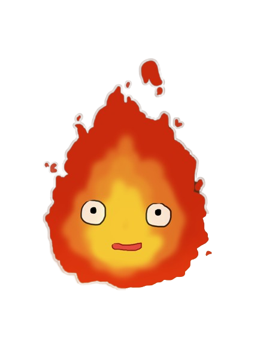

Muy parecidas a las transiciones (transition) del módulo anterior, vamos a ver la funcionalidad y las diferencias que existen entre las transiciones y las animaciones (animation), entre las que se pueden resaltar una mayor posibilidad en la definición de movimientos, la visualización sin intervención del usuario (al entrar en la página), fijar un retardo en el inicio o la reproducción indefinida de la animación (loop).
